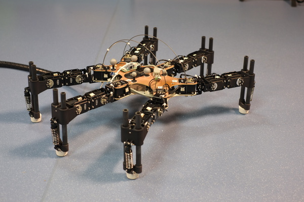
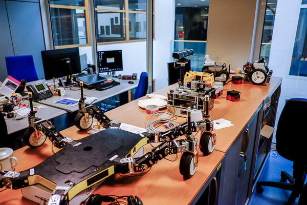
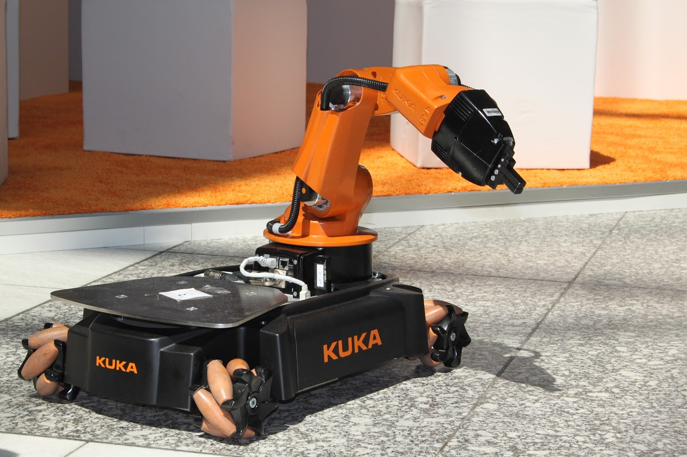
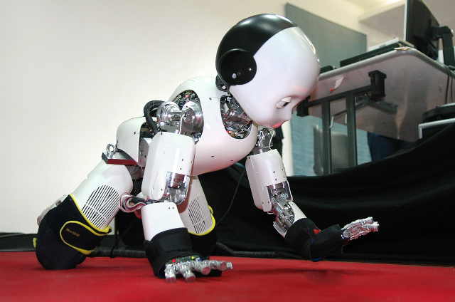

Lab & Robots (photos)¶
Check also the Videos.
The lab @ Inria Nancy¶


Our main experimental room contains a 5.5 x 6 m experimental ‘arena’ made with aluminium trusses. It is equipped with:
- a 6D motion capture system (Optitrack), with 8 gibagit cameras (Prime 13);
- 4 high-power, studio lights;
- 3 mobile 19’’ racks (on wheels), which host the power supplies and the computers to control the robots;
The trusses support the motion capture system and the lights, and hold all the cables (network, 220V, etc.).
Robots¶
Click on each image to see it bigger.
6-legged robot¶
{kind=link}

The last version of our 6-legged robot, which was featured on the cover of Nature (see Publications). Videos are available on the Videos page. This 6-legged robot is made with 18 MX-28 dynamixel actuators, a Xsens Mti-30 IMU, and a Asus x-tion (RGB-D sensor / Kinect). The silver spheres on top of the x-tion are for the motion tracking.
This robot is a demonstrator and a testbed for our adaptation algorithms. It has no direct intended application, but the algorithms that we test with it have appplications.
Creadapt robot (wheel-leg hybrid)¶
{kind=link}


The Creadapt robot is wheel-leg hybrid robot that was developped in a previous project (ANR Creadapt). It is bigger than our 6-legged robot, and it has many more ways to move (drive, walk, ...).
Kuka YouBot + Versaball¶
The YouBot is an omnidirectionnal robot manufactured by Kuka. We are modifying it to use the Versaball gripper (Empire Robotics).
iCub¶
iCub is a child-like humanoid robot with 54 actuated degrees of freedom, force torque sensors, and a sensitive skin. We use it to test our algorithms for 4-legged crawling and 2-legged walking.